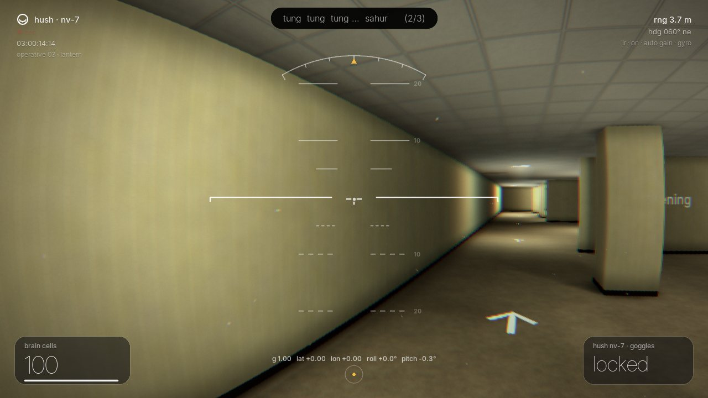
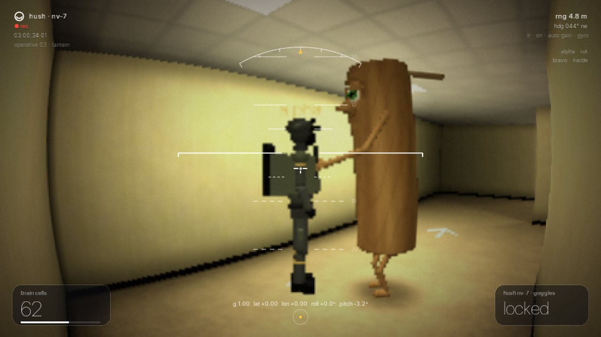
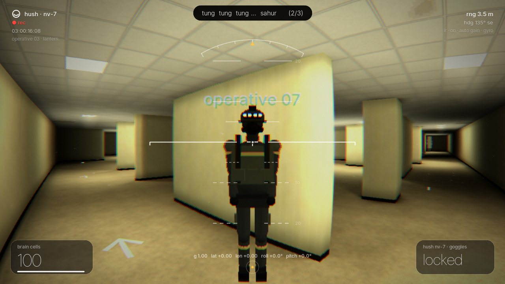
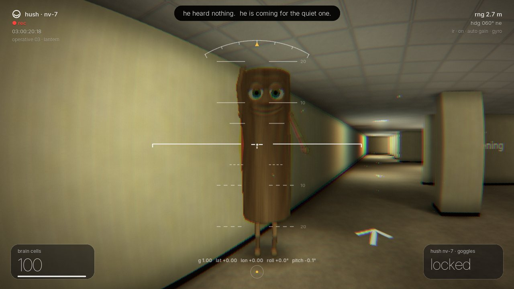

o que é
os backrooms, juntos
um escritório amarelo que não termina. carpete molhado, luz fluorescente zumbindo. vocês descem como operativos da hush, com os óculos nv-7 parafusados no crânio.
ele chama três vezes
"tung tung tung… sahur." alguém do grupo precisa responder antes da terceira chamada. ninguém responde: ele vem atrás de um de vocês. gritar à toa: ele vem atrás de quem gritou.
quando ele te pega
um terço de segundo de silêncio total. depois o rosto dele está colado no seu, a boca rasgada, gritando no volume máximo que o áudio digital aguenta. depois você assiste os outros pelos olhos deles.
qualquer pc
luz pré-calculada na própria placa de vídeo enquanto o mapa carrega, modo potato em meia resolução. roda até sem placa de vídeo.
imagens




como jogar junto
1 · lobby
alguém clica host a game. quem está na mesma wi-fi vê o jogo em join a game; de fora, digita o ip.
2 · prontos
todo mundo clica i'm ready → contagem regressiva de 5 segundos → todos caem no mesmo mapa. o host pode forçar com start now.
3 · saída
achem a porta iluminada. setas de giz, só visíveis pelos óculos, apontam o caminho.
amigos em outras casas: quem hospeda libera a porta udp 7777 no roteador, ou todos entram na mesma vpn de jogos (radmin vpn, zerotier, tailscale), ou alguém roda o servidor dedicado.
controles
pc
w a s d andar · mouse olhar · q responder "sahur" · e interagir · ctrl agachar · esc pausa
android
dedão esquerdo anda · arrastar à direita olha · toque rápido responde quando ele chama · botões e / agachar / pausa
instalar
windows
extraia e abra Sahur.exe. se aparecer "o windows protegeu o computador": mais informações → executar assim mesmo. deixe o firewall liberar redes privadas.
mac
arraste Sahur.app pra aplicativos. primeira vez: botão direito → abrir → abrir. se disser "danificado": xattr -cr /Applications/Sahur.app
linux
extraia e rode ./sahur.sh (ou ./sahur.sh potato em pc bem fraco).
android
baixe o apk no celular e abra. o android pede pra permitir "instalar apps desconhecidos" pro navegador: permita e instale.
servidor dedicado
linux x86_64, sem placa de vídeo: perfeito pra uma vps ligada 24h.
tar xzf sahur-server-linux.tar.gz && ./sahur-server/run-server.sh "meu servidor"
libere udp 7777 (e udp 7778 pra aparecer na lista da rede local). a rodada começa sozinha quando todos no lobby ficam prontos.
requisitos
- qualquer placa de vídeo com opengl 2.1 (intel gma x4500, hd graphics, geforce 8+, radeon hd 2000+) — ou nenhuma, no modo potato por software
- 2 gb de ram · fone de ouvido (sério) — mas o grito é alto de verdade: deixe o volume num nível confortável
- android 7.0 ou mais novo